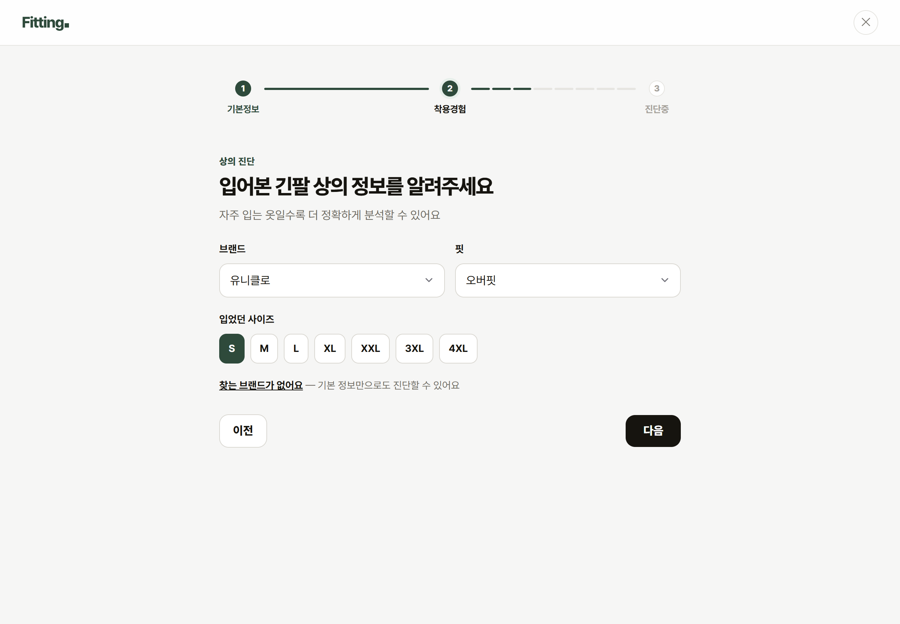
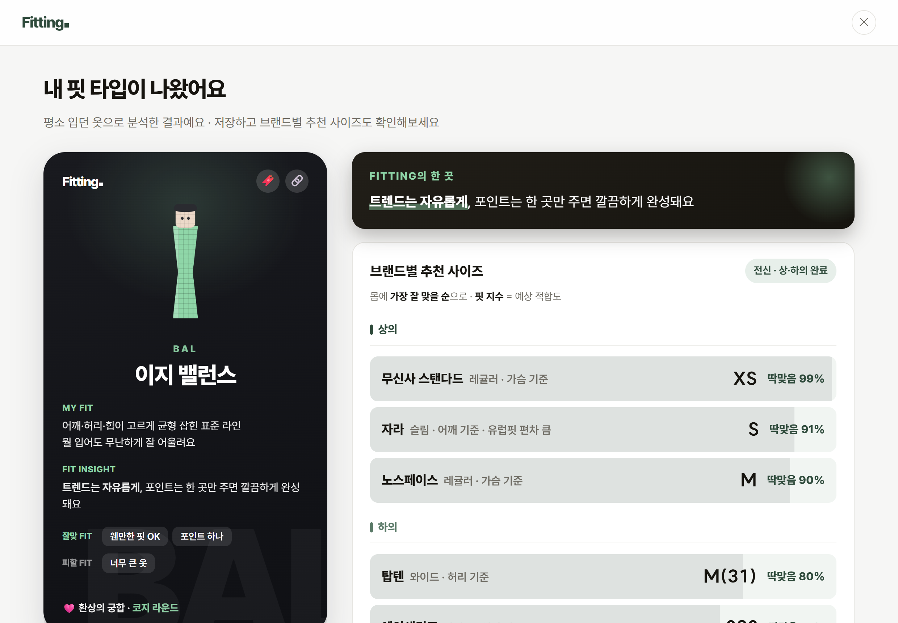
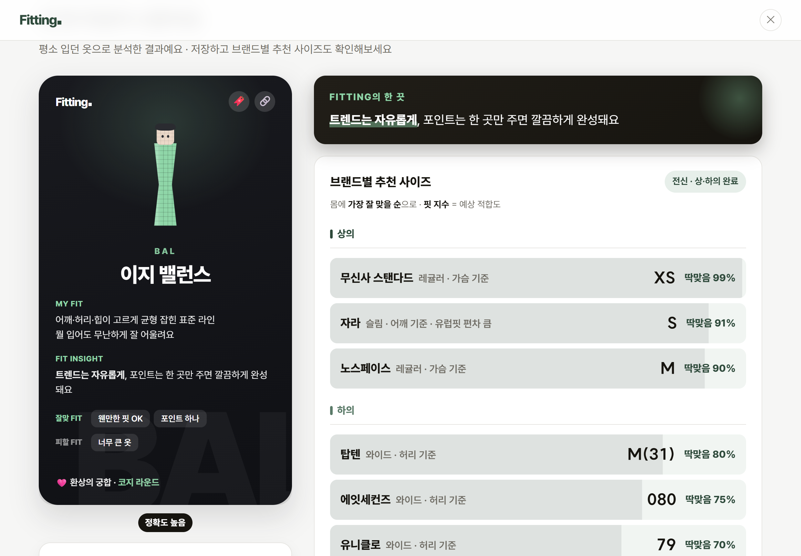
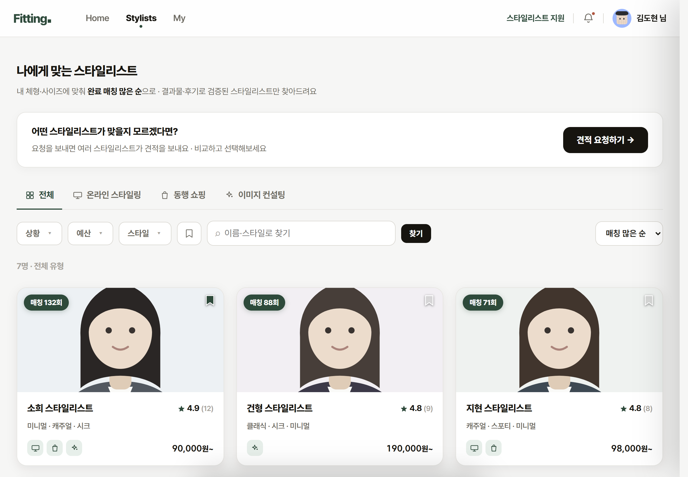
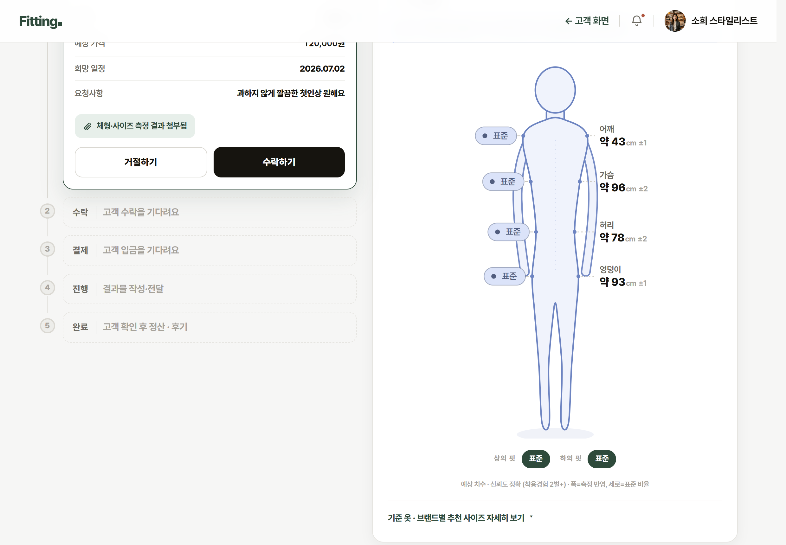

내 사이즈를 알려주는 게 아니라, 그 몰의 상품 중에서 골라줍니다
기준이 그 몰의 이력에 묶여 있어, 밖으로 나가면 함께 사라집니다
줄자를 대는 대신 평소 잘 맞는 옷 2벌의 착용 경험에서 몸을 거꾸로 계산합니다. 부위별 치수와 8체형을 뽑아 9개 브랜드의 내 사이즈로 번역합니다.
어울림은 정답이 없어 계산으로 풀리지 않습니다. 그래서 체형 진단 결과를 요청서에 그대로 실어 스타일리스트에게 연결했습니다.
앞에서 말한 역산이 실제로 어떻게 도는지 보여드리겠습니다. 입력은 옷 2벌의 착용 경험뿐입니다.



체형은 계산으로 풀었습니다. 그런데 “뭘 사야 어울리는지”는 규칙으로 계산되지 않습니다 — 정답이 없는 문제라서요. 그래서 사람에게 넘겼습니다.


착용 경험으로 내 몸을 역산합니다
정답 없는 문제는 사람에게 연결합니다
사려는 그 옷의 사이즈표를 올리면 바로 판정합니다. 우리 DB에 없는 브랜드여도 캡처 한 장이면 됩니다
진단이 "내 몸"에 답한다면, 판정은 "이 옷 한 벌"에 답합니다. 우리 DB에 없는 브랜드여도 캡처 한 장이면 됩니다.
| 부위 | S | M | L |
|---|---|---|---|
| 허리 | 끼임 | 딱맞음 | 여유 |
| 엉덩이 | 끼임 | 딱맞음 | 여유 |
| 허벅지 | 끼임 | 딱맞음 | 여유 |
| 밑위 | 길이 — 참고 정보 | ||
브랜드 실측을 팀이 손으로 모으면 한계가 분명합니다. 그래서 판정을 쓰는 과정 자체가 데이터를 모으는 과정이 되게 했습니다.
판정하려면 어차피 사이즈표를 올려야 합니다. 동의한 경우에만 저장합니다.
잘못된 실측이 정본에 섞이면 추천과 판정이 통째로 흔들립니다. 사람이 한 번 거릅니다.
승인된 사이즈표가 브랜드 실측 DB에 편입되고, 다음 진단·판정에 바로 반영됩니다.
우리가 모르던 브랜드가 사용자 손으로 채워집니다. 쓰는 사람이 늘수록 답할 수 있는 옷이 늘어납니다.
"우리끼리 좋다"는 검증이 아닙니다. 최종 MVP(체형 · 스타일 · 판정)를 주고 혼자 써보게 한 뒤 단계별로 점수를 받았습니다.
원인은 신뢰(3.38)였습니다 — "사진도 없이 진단하는데 믿어도 되나". 기능이 부족한 게 아니라, 내 몸이 반영됐다는 느낌이 부족했습니다.
우리 마음대로 바꾼 게 아니라, 받은 지적에 하나씩 답한 것입니다. 못 푸는 것은 못 푼다고 적었습니다.
| 어디서 | 받은 지적 | 우리가 한 것 | 판단 근거 |
|---|---|---|---|
| 중간 발표 | “그럼 입고 싶은 옷은 어떻게 하나요?” 진단은 "내 몸"까지만 답하고 있었다 |
구매 판정(Fit) 신설 + 사이즈표 수집 루프 | 붙여봤더니 4.24점 — 원래 있던 결과 화면(3.88)보다 높았다 |
| UT 11명 | 결과 화면 정보 과부하 "갑자기 너무 많은 정보가 들어와 당황" · 2명 |
결과를 3탭으로 재구성 내 핏 카드 · 체형 분석 · 결과 근거 |
만족도 최하(3.88) 화면 · 정보를 줄이는 게 아니라 순서를 정하는 문제 |
| UT 11명 | 브랜드 목록이 좁다 "탑텐·유니클로가 없어 어떻게 적지?" · 4명 |
주요 브랜드 추가 + "목록에 없음"을 버튼형으로 | 가장 싸고 효과 큼 — 입력에서 막히면 정확도가 통째로 흔들림 |
| 전략 먼저 | 신뢰가 낮다 3.38 "사진 없이 진단해서 못 믿겠다 / 실측을 직접 넣고 싶다" |
실측 직접 입력 옵션 검토 중 | UI가 아니라 방향 문제 — 정하지 않고 화면만 고치면 같은 지적이 반복된다 |
| 못 푼다 | 실사용 전환이 낮다 3.38 | UT로 결론 내지 않음 → 배포 데이터로 | 11명으로 전환율은 측정 불가 · "다들 좋다고 했다"로 결론 금지 |
강건형 팀장 · 데이터/엔진 | 이상민 개발 | 이소희 디자인
"한 파일 = 한 역할" 소유 규칙과 역할별 브랜치로 충돌을 구조적으로 없앴습니다.
기획 문서·화면 정의·의사결정 기록을 같은 저장소에 두고, 화면 현황판은 코드에서 자동 생성합니다.
방향이 바뀐 결정은 이유까지 기록해, 나중에 "왜 이렇게 됐지"를 다시 묻지 않습니다.
정적 프론트 + 서버 API + Supabase(Postgres). 브랜드 실측표는 서버에만 두어 노출되지 않게 했습니다.
진단·판정 계산도 서버에서 — 데이터가 곧 자산이기 때문입니다.